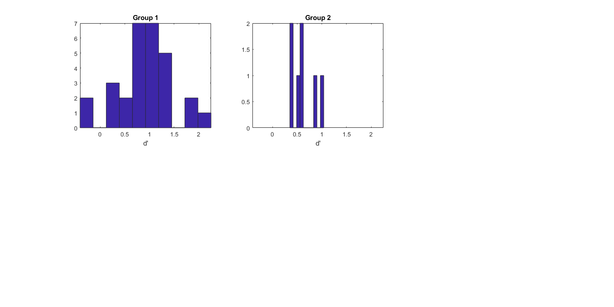

Smooth pursuit in macular degeneration
- This functions carries on the model statistical analysis for that project.
- Eye movement data, visibility and d' have been preprocessed and gathered in the master datafile.
- runs the GLM/GLME with the chopin toolbox.
- plots various graphs
- displays statistic conclusion messages
- saves figures from statistical analysis in figures folder
Contents
Inputs
None. The function must run from the analysis folder with the master datafile being located in data. Functions used in this code should all be located in shared_codes.
Outputs
None. But generates figures (folder figures), statistics (command window) and generates a joint markdown output in html by pressing Publish.
function GLME_smooth_pursuit try
close all;
clc;
Preprocessing
Creates the correct path structure
analysis_path = fileparts(mfilename('fullpath')); % root path addpath(genpath(fullfile(analysis_path,'shared_codes'))) % path with necessary codes data_path = fullfile(analysis_path,'data'); % path with the masterfile with data for analysis figure_path = fullfile(analysis_path,'figures'); % path for saving the figures % Reads data files file = 'data_smooth_pursuit_MD.xlsx'; data = readtable(fullfile(data_path,file),'Sheet','data'); % read file dispi('Loaded file ',file); % Normalize variable formats data.subject_ID = categorical(data.subject_ID); data.status = categorical(data.status); data = clean_names(data); % show a sample of the data disp('Data sample and size:') disp(data(1:10,:)) dispi(size(data,1),' lines of data found.')
Loaded file data_smooth_pursuit_MD.xlsx
Data sample and size:
subjectID conditionCode eyesTested status scotoma condition direction dprime fractionOccluded eccentricity ocm
_________ _____________ ______________ _______ ____________ ___________ _____________ _______ ________________ ____________ _______
C1 {'C1'} {'No_Scotoma'} control {'controls'} {'pursuit'} {'leftward' } 2.1383 0 1.2551 0.34046
C2 {'C2'} {'No_Scotoma'} control {'controls'} {'pursuit'} {'leftward' } 1.5695 0 0.61054 0.22687
C3 {'C3'} {'No_Scotoma'} control {'controls'} {'pursuit'} {'leftward' } 0.65321 0 1.4787 0.98788
C4 {'C4'} {'No_Scotoma'} control {'controls'} {'pursuit'} {'leftward' } 1.722 0 0.68591 0.2778
C1 {'C1'} {'No_Scotoma'} control {'controls'} {'fix' } {'rightward'} 1.8346 0 2.5405 0.69374
C2 {'C2'} {'No_Scotoma'} control {'controls'} {'fix' } {'rightward'} 1.1052 0 1.9286 0.58416
C3 {'C3'} {'No_Scotoma'} control {'controls'} {'fix' } {'rightward'} 0.97069 0 2.8653 0.84289
C1 {'C1'} {'No_Scotoma'} control {'controls'} {'pursuit'} {'rightward'} 2.4848 0 1.3806 0.23138
C3 {'C3'} {'No_Scotoma'} control {'controls'} {'pursuit'} {'rightward'} 1.0931 0 0.87279 0.32138
C2 {'C2'} {'No_Scotoma'} control {'controls'} {'pursuit'} {'rightward'} 1.5457 0 0.59828 0.43492
116 lines of data found.
Primary hypotheses on d'
Explore how the data can be explained by oculomotor noise, fraction occluded and eccentricity Hypotheses: * more eccentric stimuli result in worse d' * more fraction occluded for the stimuli result in worse d' * more oculomotor noise result in worse d'
% explore which distribution is correct check_distrib_indep(data.dprime(data.status=='control'),data.dprime(data.status=='patient'),'d'''); disp('Data are not distributed differently than normal') saveas(gcf,fullfile(figure_path,'dprime_distribution.fig')); snapnow; % Only apply the collinearity analysis on continuous predictors % Use Kendall correlations that are more powerful when using small samples corrplot2(data(:,{'eccentricity','fractionOccluded','ocm'}),'type','Kendall') disp('No particular worries for collinearity but keep in mind the correlation between ecc and ocm.') saveas(gcf,fullfile(figure_path,'factor_collinearity.fig')); snapnow; % define a model structure % a table with the data, here called data model.data = data; % the name of the dependent variable in the data structure, here it is data.initial_work_mem model.dv = 'dprime'; % its distribution among poisson, normal, gamma, inverse gaussian, binomial as previously determined model.distribution = 'normal'; % the maximal nb of factors to explore in the model model.max_nb_factors = 4; % n=10 so 100 data are used to estimate subjects' random effects (1 factor). 16 data can be used to estimate 2 more factors - we add 1 so that we can also look at the effect of non-significant factors. model.solid_factors = {'(1|subjectID)'}; %keep these between {} % a list of possible factors to be included, that can be removed if needed, and the interactions terms to explore model.liquid_factors = {'eccentricity','ocm','fractionOccluded','fractionOccluded:ocm','eccentricity:ocm','fractionOccluded:eccentricity'}; %keep these between {} % a list of potential model links model.links = {'identity'}; % outliers/subjects to be removed - can be left empty model.exclude = []; % no warnings if 1 - careful with that option model.warning_off = 0; % whether to use a GLM (0) or a GLME (1). model.glme = 1; % run the model mdls = all_glm(model); % display diagnostics and results display_model(mdls{1}, model) %plot model ranked 1 - you can select any other models by rank according to the results on the various indicators provided saveas(gcf,fullfile(figure_path,'dprime_GLME_diagnostics.fig')); snapnow; h=subplot(1,2,1); plot_covariate_effect(data.dprime, data.fractionOccluded, h, 'fraction occluded', 'd prime', 0, 0, mdls{1},1,model); h=subplot(1,2,2); plot_covariate_effect(data.dprime, data.eccentricity, h, 'eccentricity (deg)', 'd prime', 0, 0, mdls{1},1,model); disp('Interpretation: there is mostly a large effect of fraction occluded. There is also a small effect of eccentricity.') disp('Larger eccentricities and fraction occluded are associated with worse d'' results.') disp('OCM''s effect is dubious.') saveas(gcf,fullfile(figure_path,'dprime_GLME_effects.fig')); snapnow;
d' - Wilcoxon-Mann–Whitney (signed-ranks) U = 5694, p = 0.0130 Data are significantly different, so let's keep them separated Kolmogorov-Smirnov tests for normality: Group 1 - KS = 0.10, p = 0.3028 and Group 2 - KS = 0.18, p = 0.3323 Data are not distributed differently than normal
No particular worries for collinearity but keep in mind the correlation between ecc and ocm.

Running 41 GLMEs...
We tested 41 models.
Rank formula link AIC adj.R2(%) R2(%) norm.res.
____ _________________________________________________________________________________________________________ ____________ ______ _________ _____ _________
1 {'dprime ~ 1 + eccentricity + fractionOccluded + (1|subjectID)' } {'identity'} 204.16 29.8 31.1 {'yes'}
2 {'dprime ~ 1 + eccentricity + ocm + fractionOccluded + (1|subjectID)' } {'identity'} 204.97 29.2 31.1 {'yes'}
3 {'dprime ~ 1 + eccentricity + fractionOccluded + fractionOccluded:eccentricity + (1|subjectID)' } {'identity'} 205.19 30.4 32.2 {'yes'}
4 {'dprime ~ 1 + ocm + fractionOccluded + (1|subjectID)' } {'identity'} 205.68 28.5 29.7 {'yes'}
5 {'dprime ~ 1 + eccentricity + fractionOccluded + fractionOccluded:ocm + (1|subjectID)' } {'identity'} 206.14 29.3 31.2 {'yes'}
6 {'dprime ~ 1 + eccentricity + fractionOccluded + eccentricity:ocm + (1|subjectID)' } {'identity'} 206.15 29.1 31 {'yes'}
7 {'dprime ~ 1 + ocm + fractionOccluded + fractionOccluded:ocm + (1|subjectID)' } {'identity'} 206.17 29.3 31.2 {'yes'}
8 {'dprime ~ 1 + ocm + fractionOccluded + fractionOccluded:eccentricity + (1|subjectID)' } {'identity'} 206.29 29.8 31.6 {'yes'}
9 {'dprime ~ 1 + fractionOccluded + eccentricity:ocm + (1|subjectID)' } {'identity'} 206.37 28 29.3 {'yes'}
10 {'dprime ~ 1 + fractionOccluded + (1|subjectID)' } {'identity'} 206.51 28.2 28.8 {'yes'}
11 {'dprime ~ 1 + fractionOccluded + eccentricity:ocm + fractionOccluded:eccentricity + (1|subjectID)' } {'identity'} 207.2 28.9 30.8 {'yes'}
12 {'dprime ~ 1 + ocm + fractionOccluded + eccentricity:ocm + (1|subjectID)' } {'identity'} 207.67 27.8 29.7 {'yes'}
13 {'dprime ~ 1 + fractionOccluded + fractionOccluded:ocm + eccentricity:ocm + (1|subjectID)' } {'identity'} 208.07 27.8 29.7 {'yes'}
14 {'dprime ~ 1 + fractionOccluded + fractionOccluded:eccentricity + (1|subjectID)' } {'identity'} 208.1 28.4 29.6 {'yes'}
15 {'dprime ~ 1 + fractionOccluded + fractionOccluded:ocm + (1|subjectID)' } {'identity'} 208.43 27.4 28.7 {'yes'}
16 {'dprime ~ 1 + fractionOccluded + fractionOccluded:ocm + fractionOccluded:eccentricity + (1|subjectID)'} {'identity'} 209.66 27.8 29.7 {'yes'}
17 {'dprime ~ 1 + fractionOccluded:ocm + (1|subjectID)' } {'identity'} 214.01 20.3 21 {'yes'}
18 {'dprime ~ 1 + eccentricity + fractionOccluded:ocm + (1|subjectID)' } {'identity'} 214.08 20.1 21.5 {'no' }
19 {'dprime ~ 1 + eccentricity + fractionOccluded:ocm + eccentricity:ocm + (1|subjectID)' } {'identity'} 215.04 21 23 {'yes'}
20 {'dprime ~ 1 + eccentricity + fractionOccluded:ocm + fractionOccluded:eccentricity + (1|subjectID)' } {'identity'} 215.9 19.6 21.7 {'yes'}
21 {'dprime ~ 1 + fractionOccluded:ocm + fractionOccluded:eccentricity + (1|subjectID)' } {'identity'} 215.92 19.8 21.2 {'yes'}
22 {'dprime ~ 1 + eccentricity + ocm + fractionOccluded:ocm + (1|subjectID)' } {'identity'} 215.93 19.8 21.9 {'yes'}
23 {'dprime ~ 1 + fractionOccluded:ocm + eccentricity:ocm + (1|subjectID)' } {'identity'} 215.98 19.5 20.9 {'yes'}
24 {'dprime ~ 1 + ocm + fractionOccluded:ocm + (1|subjectID)' } {'identity'} 216.01 19.6 21 {'yes'}
25 {'dprime ~ 1 + fractionOccluded:ocm + eccentricity:ocm + fractionOccluded:eccentricity + (1|subjectID)'} {'identity'} 217.9 19 21.1 {'yes'}
26 {'dprime ~ 1 + ocm + fractionOccluded:ocm + fractionOccluded:eccentricity + (1|subjectID)' } {'identity'} 217.92 19.1 21.3 {'yes'}
27 {'dprime ~ 1 + ocm + fractionOccluded:ocm + eccentricity:ocm + (1|subjectID)' } {'identity'} 217.94 18.8 20.9 {'yes'}
28 {'dprime ~ 1 + fractionOccluded:eccentricity + (1|subjectID)' } {'identity'} 223.22 12.7 13.5 {'yes'}
29 {'dprime ~ 1 + ocm + fractionOccluded:eccentricity + (1|subjectID)' } {'identity'} 223.68 12.3 13.8 {'yes'}
30 {'dprime ~ 1 + eccentricity + fractionOccluded:eccentricity + (1|subjectID)' } {'identity'} 223.99 12.7 14.2 {'yes'}
31 {'dprime ~ 1 + eccentricity:ocm + fractionOccluded:eccentricity + (1|subjectID)' } {'identity'} 224.66 11.8 13.4 {'yes'}
32 {'dprime ~ 1 + eccentricity + ocm + fractionOccluded:eccentricity + (1|subjectID)' } {'identity'} 225.02 11.8 14.2 {'yes'}
33 {'dprime ~ 1 + ocm + eccentricity:ocm + fractionOccluded:eccentricity + (1|subjectID)' } {'identity'} 225.51 11.8 14.1 {'yes'}
34 {'dprime ~ 1 + eccentricity + eccentricity:ocm + fractionOccluded:eccentricity + (1|subjectID)' } {'identity'} 225.99 11.9 14.2 {'yes'}
35 {'dprime ~ 1 + ocm + (1|subjectID)' } {'identity'} 229.09 8.6 9.4 {'yes'}
36 {'dprime ~ 1 + eccentricity + ocm + eccentricity:ocm + (1|subjectID)' } {'identity'} 229.42 9.8 12.1 {'yes'}
37 {'dprime ~ 1 + eccentricity + ocm + (1|subjectID)' } {'identity'} 230.24 7.9 9.5 {'yes'}
38 {'dprime ~ 1 + eccentricity + (1|subjectID)' } {'identity'} 230.49 7.9 8.7 {'yes'}
39 {'dprime ~ 1 + eccentricity:ocm + (1|subjectID)' } {'identity'} 230.67 7.4 8.2 {'yes'}
40 {'dprime ~ 1 + ocm + eccentricity:ocm + (1|subjectID)' } {'identity'} 230.95 8.3 9.9 {'yes'}
41 {'dprime ~ 1 + eccentricity + eccentricity:ocm + (1|subjectID)' } {'identity'} 232.21 6.9 8.5 {'yes'}
-------------------------------------------------------------------------------
Summary of variable formats in best model
Class Range InModel IsCategorical
_______________ ____________________________________________________________ _______ _____________
subjectID {'categorical'} {[C1 C2 C3 C4 M1 M2 M3 M4 M5 M6]} true true
fractionOccluded {'double' } {[ 0 0.9179]} true false
eccentricity {'double' } {[ 0.3935 29.1507]} true false
Summary of best model
Generalized linear mixed-effects model fit by PL
Model information:
Number of observations 115
Fixed effects coefficients 3
Random effects coefficients 10
Covariance parameters 2
Distribution Normal
Link Identity
FitMethod MPL
Formula:
dprime ~ 1 + fractionOccluded + eccentricity + (1 | subjectID)
Model fit statistics:
AIC BIC LogLikelihood Deviance
204.16 217.88 -97.079 194.16
Fixed effects coefficients (95% CIs):
Name Estimate SE tStat DF
{'(Intercept)' } 1.3038 0.13655 9.5476 112
{'fractionOccluded'} -1.0855 0.19319 -5.619 112
{'eccentricity' } -0.029347 0.01383 -2.1221 112
pValue Lower Upper
3.6598e-16 1.0332 1.5743
1.4213e-07 -1.4683 -0.70276
0.036037 -0.056749 -0.0019456
Random effects covariance parameters:
Group: subjectID (10 Levels)
Name1 Name2 Type Estimate
{'(Intercept)'} {'(Intercept)'} {'std'} 0.2461
Group: Error
Name Estimate
{'sqrt(Dispersion)'} 0.53782
AIC: 204.1586
Adjusted R^2: 29.8%
R^2: 31.1%
Residuals: Kolmogorov test for normality (alpha 5%): KS = 0.09, p = 0.2488
Residuals are normal
RANDOM EFFECT COEFFICIENTS: DFMETHOD = 'RESIDUAL', ALPHA = 0.01
Group Level Name Estimate
{'subjectID'} {'C1'} {'(Intercept)'} 0.29072
{'subjectID'} {'C2'} {'(Intercept)'} 0.17778
{'subjectID'} {'C3'} {'(Intercept)'} 0.10676
{'subjectID'} {'C4'} {'(Intercept)'} -0.35637
{'subjectID'} {'M1'} {'(Intercept)'} -0.10154
{'subjectID'} {'M2'} {'(Intercept)'} -0.010318
{'subjectID'} {'M3'} {'(Intercept)'} -0.21772
{'subjectID'} {'M4'} {'(Intercept)'} -0.079413
{'subjectID'} {'M5'} {'(Intercept)'} 0.20141
{'subjectID'} {'M6'} {'(Intercept)'} -0.011301
SEPred tStat DF pValue Lower Upper
0.13286 2.1881 112 0.030739 -0.057441 0.63888
0.13241 1.3426 112 0.18211 -0.1692 0.52476
0.14271 0.74808 112 0.45598 -0.2672 0.48071
0.1469 -2.4259 112 0.016867 -0.74131 0.028579
0.19743 -0.5143 112 0.60806 -0.6189 0.41582
0.18926 -0.054517 112 0.95662 -0.50626 0.48562
0.19677 -1.1065 112 0.27089 -0.73335 0.2979
0.19779 -0.40151 112 0.68881 -0.59771 0.43888
0.19537 1.0309 112 0.3048 -0.31054 0.71335
0.17456 -0.064739 112 0.9485 -0.46873 0.44613
No adjustment for multiple comparisons
Name Estimate tStat DF pValue adj_pValue H0_reject
____________________ _________ _______ ___ __________ __________ _________
{'fractionOccluded'} -1.0855 -5.619 112 1.4213e-07 1.4213e-07 true
{'eccentricity' } -0.029347 -2.1221 112 0.036037 0.036037 true
Significant effect of fractionOccluded (t(112) = -5.62, adjusted p = 0)
Significant effect of eccentricity (t(112) = -2.12, adjusted p = 0.036)
Local effect size for fractionOccluded : Cohen s f2 = 0.33 (medium)
Local effect size for eccentricity : Cohen s f2 = 0.03 (small)
-------------------------------------------------------------------------------
ans =
2×7 table
Name Estimate tStat DF pValue adj_pValue H0_reject
____________________________ _________ _______ ___ __________ __________ _________
{'dprime: fractionOccluded'} -1.0855 -5.619 112 1.4213e-07 1.4213e-07 true
{'dprime: eccentricity' } -0.029347 -2.1221 112 0.036037 0.036037 true

Interpretation: there is mostly a large effect of fraction occluded. There is also a small effect of eccentricity. Larger eccentricities and fraction occluded are associated with worse d' results. OCM's effect is dubious.
debugging
catch err keyboard end end